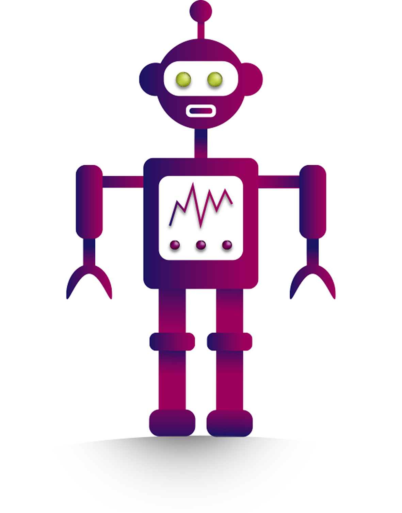

Animasjon
Animasjon av vektorgrafikk i Adobe Animate
Studentprosjekt ved OsloMet, vår 2019
Kontekst
I forbindelse med gjennomføringen av emnet DKDM1400 — Interaktivitet og design ved OsloMet, laget jeg en enkel animasjon i Adobe Animate. Animasjonen ble laget som et forslag til en chatbot-avatar.

Figur: Animasjonen ble laget med utgangspunkt i en vektorgrafikk laget i Adobe Illustrator.